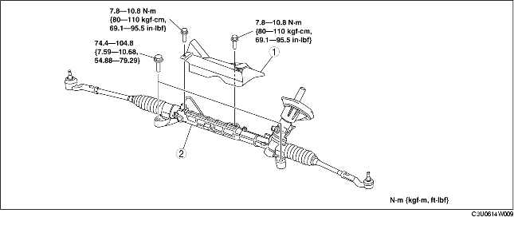

STEERING GEAR AND LINKAGE REMOVAL/INSTALLATION
B3E061432960W01
-
Caution
-
• Performing the following procedures without first removing the ABS wheel-speed sensor may possibly cause an open circuit in the wiring harness if it is pulled by mistake. Before performing the following procedures, disconnect the ABS wheel-speed sensor connector (axle side) and fix the wiring harness to an appropriate place where it will not be pulled by mistake while servicing the vehicle.
1. Remove the front crossmember, lower arm, front stabilizer, and steering gear and linkage as a single unit. (See FRONT CROSSMEMBER REMOVAL/INSTALLATION.)
2. Remove in the order indicated in the table.
3. Install in the reverse order of removal.
4. After installation, inspect the front wheel alignment and adjust it if necessary. (See FRONT WHEEL ALIGNMENT.)

.
|
1
|
Insulator
|
|
2
|
Steering gear and linkage
|